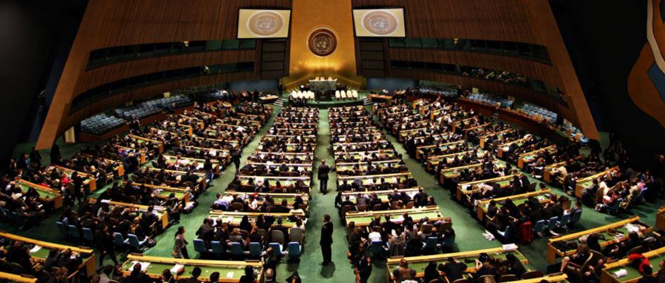

La guerre n'est pas, contrairement à une idée répandue, essentiellement un instrument utilisé par les nations pour étendre ou défendre leurs valeurs ou leurs intérêts. Elle est la base même de toute l'organisation de notre société. La cause immédiate de toutes les guerres résulte d'un conflit apparent entre deux nations ou deux groupes d'un même peuple. Mais dans la réalité on trouve les exigences dynamiques d'un système bâti sur la guerre. C'est l'état de préparation constante à la prochaine guerre qui finit par la rendre nécessaire. Ce sont les systèmes sociaux contemporains qui, en se tenant à tout moment prêt à engager des conflits, caractérisent mieux cet état latent que leurs structures économiques et politiques. Cependant, trouver des substituts aux différentes fonctions jusqu'ici remplies par la guerre peut ne pas suffire car il faut également que ces substituts soient encore compatibles entre eux. Les rapporteurs reconnaissent que, en l'absence d'un programme unifié de substituts compatibles entre eux, il sera impossible de répondre aux questions posées à l'origine du rapport.
Il apparaît alors impossible, du moins en l'état, de prendre la responsabilité de faire disparaître le système fondé sur la guerre tant que les deux hypothèques suivantes ne seront pas levées :
1) Nous devons connaître exactement le système de remplacement
2) Nous devons avoir la certitude que les mesures proposées assureront l'existence et la stabilité de la société.
Enfin, l'examen nécessaire de la recherche de conciliation des causes de conflit n'a pas été discuté. Même s'il n'existe pas d'obstacles fondamentaux à cette recherche, il est cependant évident que certains groupes privés et certaines classes capitalistes ont un intérêt manifeste à rester dans le système basé sur la guerre. Cela représentera un obstacle majeur qui a lourdement pesé dans les conclusions du rapport. Il ne peut donc formellement être dit que la paix ne sera jamais possible mais, au-delà du « sentimentalisme pacifique », est-elle vraiment souhaitable ?
Dans ces conditions, le groupe conclut que le gouvernement va devoir étudier conjointement des plans pour deux sortes d'éventualités :
La première, qui est la moins probable, est l'hypothèse d'une paix planétaire durable
La seconde est la continuation « réussie » du système actuel, basé sur la guerre.
Dans cette période d'incertitude, il convient de garder ouvertes le plus grand nombre d'options et c'est la raison pour laquelle un certain nombre de mesures, destinées à faire évoluer le système existant tout en le rapprochant de celui de la paix, au cas où celle-ci, bien qu'improbable, réussirait à s'imposer.
En tenant compte de tout ce qui précède, le rapport recommande la création d'une agence gouvernementale de recherche sur la Guerre et la Paix, avec mandat de pouvoir exécuter les actions suivantes :
- Recevoir des fonds sans comptes à rendre à personne.
- Droit d'obtenir en priorité et d'utiliser sans restriction toutes les ressources du pouvoir exécutif
- Aucun membre ne pourra détenir un autre emploi public ou une responsabilité de gouvernement
- Les décisions devront être gardées secrètes, exceptées pour le Président.
En outre, l'agence devra prendre en compte :
1) La mesure des conséquences non militaires de la guerre, en estimant le montant total et la proportion des dépenses militaires non productives effectuées depuis la fin de la seconde guerre mondiale et qui peuvent imputées à la nécessité de la guerre comme élément de stabilité économique.
2)Total et proportion des dépenses militaires et des pertes en vies humaines, biens immobiliers et ressources naturelles durant la période et considérées comme relevant de la guerre en tant qu'instrument de contrôle politique.
3) Calcul identique concernant la cohésion sociale.
4) Budget nécessaire au recrutement et aux dépenses au niveau du personnel militaire dus à la nécessité de maintenir les institutions nécessaires afin de contenir le mécontentement social.
5) Rapports statistiques entre les pertes en vies humaines dues à la guerre et les ressources alimentaires mondiales.
6) Rapport entre les activités et les dépenses militaires comparées aux activités culturelles et les progrès scientifiques.
Ensuite, l'agence devra définir des critères « modernes » pour exécuter les tâches non-militaires de la guerre de façon à en minimiser les coûts et les pertes humaines.
Ces critères devront cependant respecter les limitations imposées dans les domaines économique, politique, sociologique et écologique. Il s'agit donc de rationaliser les opérations du système basé sur la guerre afin d'obtenir les résultats identiques à la guerre par des moyens de substitution moins coûteux en argent et en vies qui donneraient les mêmes résultats dans les différentes fonctions de la guerre que les opérations « traditionnelles »
QUELLES FURENT LES CONSÉQUENCES DE CE RAPPORT ?
Publié en 1967, alors qu'il n'aurait jamais dû l'être, ce rapport a-t-il été suivi d'effets ? Dans un ouvrage paru en en français en 20121, intitulé « La guerre des monnaies », Honk Bing Song y fait référence en parlant du réchauffement climatique dû à l'activité de l'homme. Il considère que les promoteurs du GIEC de 1988 sont les groupes Rockefeller et Rothschild.
Ils se sont inspirés de ce rapport pour établir leur projet qui allait déboucher sur la taxe carbone. Il écrivait « En redoublant d’efforts de propagande sur les méfaits de la pollution, on pourrait atteindre un effet psychologique aussi effroyable que la fin du monde après la guerre nucléaire »
On peut également se poser la question de savoir si le terrorisme islamique, apparu à la fin des années 70, ne trouve pas au moins une partie de son origine dans la nécessité dans laquelle se trouvait l'état profond américain de réinventer un nouvel adversaire après la disparition de l'Union Soviétique entraînant de facto la fin de la « guerre froide » ?
Peter Dale Scott2 rappelle sans ambiguïté le rôle de Zbignew Brezinzski dans la déstabilisation de l'Union Soviétique et
notamment comment il avait fait armer les terroristes islamiques pour les lancer contre elle directement dans des opérations militaires contre l'armée rouge en Afghanistan ou en créant de l'agitation dans certaines républiques musulmanes du sud. Plus tard, ces mêmes terroristes issus d'Al Qaida se retrouveront en Yougoslavie3 afin de combattre les Serbes, alliés de la Russie.
Aujourd'hui, le terrorisme islamique génère à lui-seul en France environ 45 milliards de dépenses annuelles (2% du PIB) 4 et on peut se poser la question de savoir si, finalement, ce terrorisme islamique n'est pas un substitut à la fois militaire et non militaire à la guerre conventionnelle. Son aspect « mondial » et son absence de revendications réelles peuvent conduire à une « guerre sans fin »
J.G.
Notes
1 La guerre des monnaies (Currency war) Hong Bing Song Editions Le retour aux sources
2 « Vers un nouveau désordre mondial » Peter Dale Scott éditions Demi-lune 2013
Partager cette page